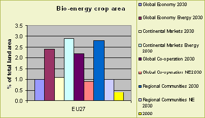
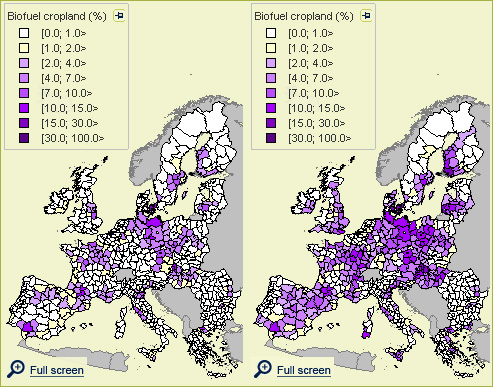

|
Past developments
Renewable energies are seen as a way to help reduce greenhouse gas emissions and to
contribute to a secure energy supply for Europe. Currently, around 4% of the EU's
total energy consumption is met from biomass (EEA report 7/2006). Development of
biomass production for energy develops rather slow compared to other renewable
energy sources like wind or solar power production. The EU intends to increase the
use of renewable energy. This will require a substantial rise in the use of biomass.
Future developments
In Eururalis only bio-energy production with use of the so-called first generation is
looked at. This comprises the production of bio-diesel and bio-ethanol from regular
agricultural crops such as rape, wheat and sugarbeets.

Figure 5 - Percentage of total EU27 area used for bio-
energy crop production for 8 scenarios in 2030 as well as for the situation in
the year 2000
|
In figure 5 the land-use by bio-energy cropland is indicated. It can clearly be seen that
in 2030 the amount of bio-energy crops has increased in all scenarios. There are
substantial differences in the share of bio-energy between the four baseline scenarios.
In the Global economy - and Continental markets- scenarios the share of bio-energy is
smaller than in the Global Co-operation and Regional communities scenarios. The latter
scenarios assume strong governments that rely less on market-based solutions and more on
government regulations. This includes strong EU support for bio-energy cultivation, which
can explain the larger share of bio-energy in these scenarios. Most of these 'extra' bio-
energy are allocated in Eastern-Europe. Despite (important) differences in allocation
between the scenarios, similar areas are showing most growth in biodiesel/bioethanol
crops in all the scenarios. Apparently, these locations are much more suitable for bio-
energy than others. These areas probably stand out because they have a combination of
well-developed infrastructure and large areas of suitable arable. Examples include
NE-Germany, parts of Poland, Lithuania, agricultural areas around Paris, and around the
border area of Slovakia, Hungary and Austria.
Policy effects
The most influential is the bio-energy policy itself. With this policy the amount of bio-
energy in the fuel consumption will be targeted at 5.75% by 2010. This will lead to an
increase of cropland used for bio-energy consumption. Total land used for first generation
bio-energy production goes up from 0.3 percent in 2000 to between 2.2 and 2.9 percent in
2030 when the bio-energy directive is implemented. This would mean that under these
circumstances in 2030 4 to 6 percent of agricultural area would be used to contribute
to 5.75% target of the bio-energy directive.

Figure 6. Bio-energy crop production in the EU27 in the
Continental Market (A2) scenario in 2030. Right without bio-energy policy and left
with a policy stimulating bio-energy production.
|
Discussion
The bio-energy directive will stimulate the production of biofuel crops. It will reduce
the amount of abandoned land. Though the location of biofuel production will mainly be
the large very fertile cropland areas; this means that prevention of abandonment in Less
Favoured Areas is not directly seen. The EUruralis project limits itself to bio-energy
crops used for the production of either biodiesel or bioethanol. Both types of crops are
grouped together in the model as 'biodiesel/bioethanol crops'. So-called 'biomass' or
'second-generation' bio-energy crops are not (yet) considered, although these crops could
have a large environmental impact due to different management/cultivation patterns.
Used methodology
The demand of bio-energy crops is implemented in the Gtap model as a separate Gtap-E (energy)
module. The allocation of bio-energy crops is done with the CLUE model. The bio-energy-model
allocates biodiesel/bioethanol crops independently in each country in time-steps of a year for
the period 2000-2030. The area of biodiesel/bioethanol crops that is allocated per year in each
country is based on GTAP- calculations. The bio-energy-model itself consists of two different
modules. The first module concerns the allocation of processing plants that are needed to
process biodiesel/bioethanol crops, whereas the second module concerns the actual allocation of
crops themselves (taking into account the location of processing plants).
|